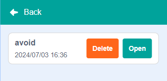
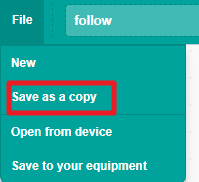
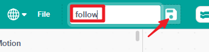
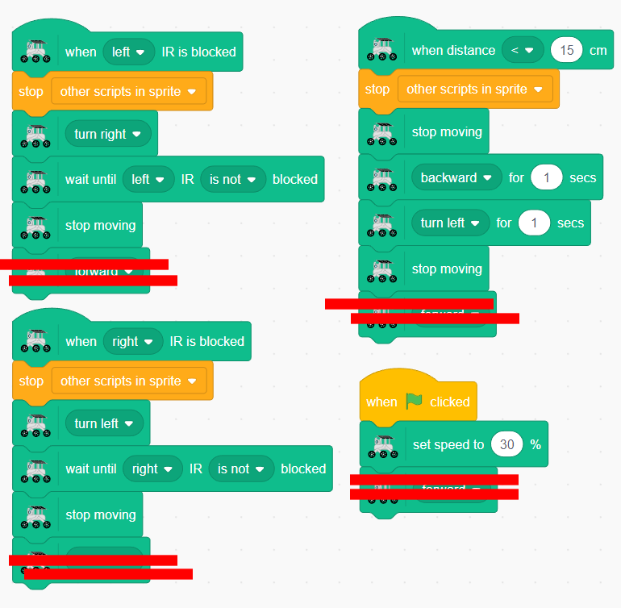
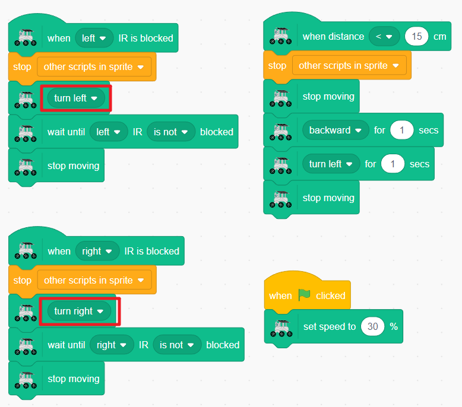
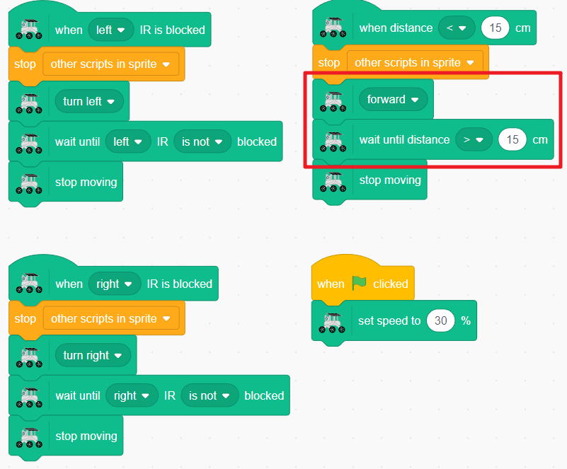

Note
Hello, welcome to the SunFounder Raspberry Pi & Arduino & ESP32 Enthusiasts Community on Facebook! Dive deeper into Raspberry Pi, Arduino, and ESP32 with fellow enthusiasts.
Why Join?
Expert Support: Solve post-sale issues and technical challenges with help from our community and team.
Learn & Share: Exchange tips and tutorials to enhance your skills.
Exclusive Previews: Get early access to new product announcements and sneak peeks.
Special Discounts: Enjoy exclusive discounts on our newest products.
Festive Promotions and Giveaways: Take part in giveaways and holiday promotions.
👉 Ready to explore and create with us? Click [here] and join today!
Lesson 9: Mars Exploration Partner
Now that our Rover can skillfully avoid obstacles, let’s teach it a new trick - following a target! In this mission, we’ll transform our obstacle-avoiding rover into a loyal companion that can follow you around.
What’s the difference between following and avoiding?
Avoiding: Steer away from objects (like dodging rocks)
Following: Move toward objects (like following a friend)
Get ready to code your very own Mars exploration buddy!
Learning Objectives
Combine ultrasonic and infrared sensors to create a following rover
Program your Mars Rover to automatically track and follow a moving target
Creating Your Following Rover
First, Connecting the APP to GalaxyRVR.
Now, open your saved project in Lesson 8.

Save a copy to keep your original project safe. Click “Save as a copy.”

Give your new project a fun name like “Mars Follower” or “Rover Buddy.”

Remove the “move forward” blocks from the end of each sensor event. Our follower should stop and wait after each action.

Now let’s reprogram the IR sensors! Change the turning directions so the rover turns TOWARD the target instead of away from it.

Finally, update the ultrasonic sensor behavior. Instead of backing away, make it move FORWARD when it detects a target in front.

Amazing! Your GalaxyRVR is now your Mars exploration partner. Test it out:
Walk beside it → it turns to face you
Stand in front → it moves toward you
Move away → it stops and waits
Your rover buddy is ready to follow you on your next space adventure!